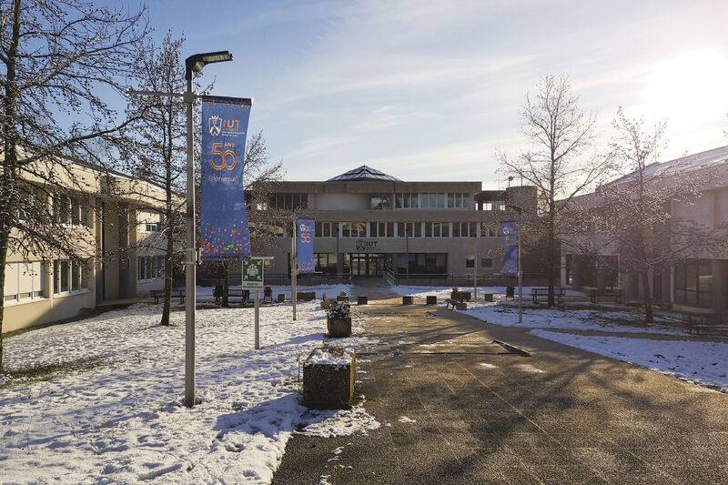
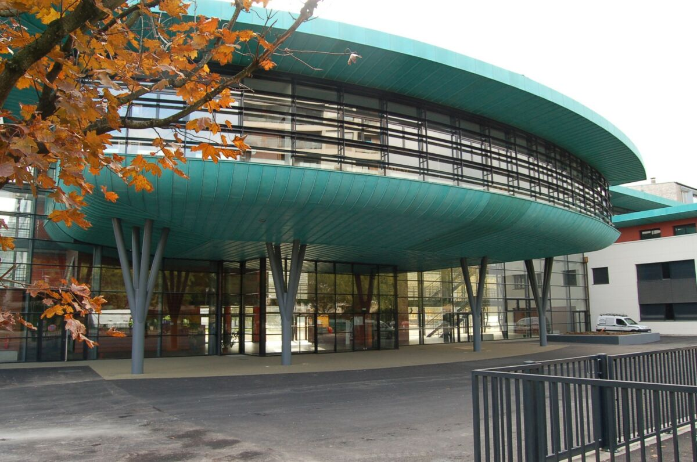
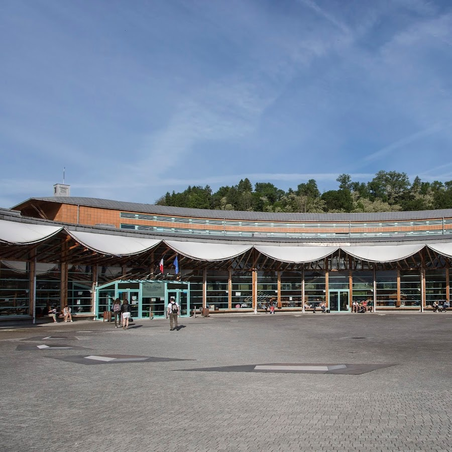

Actuellement en troisème année de BUT Informatique, Université Savoie Mont Blanc - IUT d'Annecy.

CPGE TSI : Classe Préparatoire au Grande Ecole Technologie et Sciences Industrielles, Lycée Monge - Chambéry.

Baccalauréat téchnologique, STI2D (sciences et technologies de l'industrie et du développement durable), mention assez bien, Lycée Albanais, Rumilly.